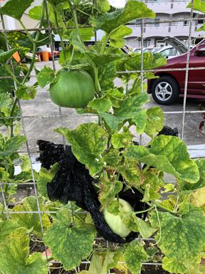

うるがいの話 ある日
最新:
初めて覚えた英語の歌詞
うるがいとは 前提知識です
カニの画像をクリックすると『うるがいの話』サイトを表示します

|
うるがい(ｳﾙｶﾞｲ urugai)とは、『もずくがに』の名前でとても大きくなります。
|

|
たながー（ﾀﾅｶﾞｰtanagaa）とは手長えびのことで、何種類かあり大きいのは車
エビぐらいになります。
|

|
ぶながー(bunagaa)とは、赤い髪の毛、赤い身体、そして身長は１ｍ２０ｃｍ
ぐらい、川の蟹を食べているの目撃された。場所は沖縄県国頭郡大宜味村のと
ある村僕の隣近所に住んでいる爺さんから、聞いた話です。
|
2021年08月05日 (木）初めて覚えた英語の歌詞
15:35

中学生の頃、まだ寝ていた夏の明け方、私の部屋の近くにあった黒電話に電話
がかかる。母親が、なにやら深刻そうな話をしていた。「そう、亡くなったの
ね、ハルオバァーに連絡するね」と電話を置いた。まだ電話があるところは珍
しい時代で、家からかなり離れた所に住んでいるハルオバァーを呼んでくるこ
とが出来なかった。姉より少し年上の漢字は違うが、同じ名前の親戚のオネー
サンだった。白血病にかかり、オバァーの長女が大阪で看護婦をしていてる病
院で入院していた。まだ、大学生だった。実家から、那覇まで５８号線を通り
泊から安里、松川のコースしかなく車で３時間もかかっていた頃、とある夏休
み、那覇の松川からそのオネーサンも一緒に、実家のダットサンのトラックの
荷台に乗って大宜味村まで、夜中移動した（荷台は青天井で明るいと見られる
）。トラックの荷台で、小学生だった私にオネーサンが英語で歌を教えてくれ
た。
ユーアム シャイン シャイン マイ オンリイ シャイン シャイン
ユウ メイクス ハピー ・・・夢はのり ハウ マッチ アイ ラビュー
ふと、頭でこの曲が流れた、この歌って何の曲、調べてみるかとスマホアプリ
Ｓｈａｚａｍ（端末のマイクで流れている音楽を認識し曲名を出してくれる）
の前で歌う。認識できません！（失礼な）、仕方ないのでグーグルに頼る。検
索はカタカナを適当に英語にした。
lyrics you am shain shain know sun shain you make happy my only shain
一発で回答が。
『You Are My Sunshine』
私が覚えていた部分の正しい歌詞は
You are my sunshine, my only sunshine.
You make me happy when skies are gray.
You’ll never know, dear, how much I love you.
ウーン、なかなか当たっている。昨日、定期的に行っている内科にいく。心電
図を検査すのに、ズボンのチャックを開けていたら必要なかった（少し恥ずか
しい、尿路結石の時と勘違い）。そして、主治医に「元気ですか」、え、仕事
していないので元気ですよ、オリンピックみて興奮してやや疲れてますが。「
ワクチンは一回目は打ったですね」、ええ、来週に２度目です、ワクチンも打
った事だし、そろそろ年内に仕事を捜そうかなと思っています・・。でもコロ
ナひどくなっていますね、「ええ、もっと増えますヨ」、おお、そうですよね
先生ところはさすがに情報を持っているからな。すでに今日のお昼２時過ぎに
タイムスから６４８人とメールが来た。熱帯低気圧で天気が荒れそうで心配し
たが、ヨメは２回目のワクチンを終える。